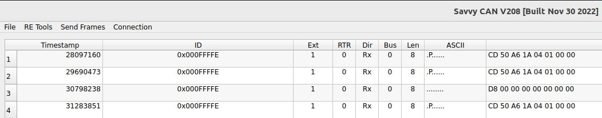

Volvo Diagnostic messages¶
Sniffing the VIDA diagnostic messages:¶
ID 0x000FFFFE (this is the VIDA tool identifier)
000FFFFE CD 11 A6 01 96 01 00 00
| | | | | |
| | | | | '--------- Number of responses expected (query only)
| | | | '-------------- Operation ID/Sensor ID (01 96)
| | | '----------------- Type of operation
| | '-------------------- Module id in CEM
| '----------------------- Message length (always C8 + data byte length)
'-------------------------- Start of frame
applied to a real message:¶
(message) CD 50 A6 1A 04 01 00 00
message length = 0xCD-0xC8=5
0x50 module ID CEM
0xA6 Read Current Data By Identifier
0x1A04 372302,4,REID,1A04,Ignition key position
0x1 the number of responses expected
so VIDA is checking key position
(message) CD 50 A6 1A 02 01 00 00
372302,4,REID,1A02,Read 30-supply
guess VIDA is checking the voltage of the CEM
Guessing the reply¶
We are expecting a response on this: so module 50 has to reply the ID of replies should be 0x01200021
(message) 01200021 | CE 50 E6 1A 04 0C 0D 00
Our request was an A6, so E6 must mean response by identifier. The identifier was the key position : 0x1A04
Now remains to guess which values represent the key position ?
I found a clue in the DHA database :
RESPONSE_ITEM [NAME=IgnitionKeyPos Ignition key not inserted][SEND_ABLE=FALSE][NOTE=IgnitionKeyPos] [NO_OF_BYTES=1] [OFFSET=3] [MASK=] [UNIT=Ignition key not inserted] [PRECISION=2] [SIGNED=U] [BASE=DEC] [FORMULA=x&0b00000111] [COMP_VALUE==0b00000000] [DEP_RESPITEM=CHECKOK] [DEP_RESPITEM_CHECK=TRUE] RESPONSE_ITEM [NAME=IgnitionKeyPos Pos 0][SEND_ABLE=FALSE][NOTE=IgnitionKeyPos] [NO_OF_BYTES=1] [OFFSET=3] [MASK=] [UNIT=Pos 0] [PRECISION=2] [SIGNED=U] [BASE=DEC] [FORMULA=x&0b00000111] [COMP_VALUE==0b00000100] [DEP_RESPITEM=CHECKOK] [DEP_RESPITEM_CHECK=TRUE] RESPONSE_ITEM [NAME=IgnitionKeyPos Pos I][SEND_ABLE=FALSE][NOTE=IgnitionKeyPos] [NO_OF_BYTES=1] [OFFSET=3] [MASK=] [UNIT=Pos I] [PRECISION=2] [SIGNED=U] [BASE=DEC] [FORMULA=x&0b00000111] [COMP_VALUE==0b00000101] [DEP_RESPITEM=CHECKOK] [DEP_RESPITEM_CHECK=TRUE] RESPONSE_ITEM [NAME=IgnitionKeyPos Pos II][SEND_ABLE=FALSE][NOTE=IgnitionKeyPos] [NO_OF_BYTES=1] [OFFSET=3] [MASK=] [UNIT=Pos II] [PRECISION=2] [SIGNED=U] [BASE=DEC] [FORMULA=x&0b00000111] [COMP_VALUE==0b00000110] [DEP_RESPITEM=CHECKOK] [DEP_RESPITEM_CHECK=TRUE] RESPONSE_ITEM [NAME=IgnitionKeyPos Pos III][SEND_ABLE=FALSE][NOTE=IgnitionKeyPos] [NO_OF_BYTES=1] [OFFSET=3] [MASK=] [UNIT=Pos III] [PRECISION=2] [SIGNED=U] [BASE=DEC] [FORMULA=x&0b00000111] [COMP_VALUE==0b00000111] [DEP_RESPITEM=CHECKOK] [DEP_RESPITEM_CHECK=TRUE] RESPONSE_ITEM [NAME=IgnitionKeyPosQF ][SEND_ABLE=FALSE][NOTE=IgnitionKeyPosQF] [NO_OF_BYTES=1] [OFFSET=3] [MASK=] [UNIT=] [PRECISION=2] [SIGNED=U] [BASE=DEC] [FORMULA=x&0b00011000/8] [COMP_VALUE=] [DEP_RESPITEM=CHECKOK] [DEP_RESPITEM_CHECK=TRUE]
END
Top tip : finding a script¶
All the Volvo scripts are under compressed format in an SQL table. My model is mdl545yr2009. Suppose I’m interested in the CCM (climate)module: this has the following ID = 871101.
grep 871101 0900* > tempfile # this gets me all the scripts for the module
grep mdl545yr2009 tempfile > investigatefile # this gets me only the scripts for my model
Script 0900c8af81d49c30 (EcuIdentification)¶
in this script all the modules are listed, together with their ID. Remarkable is this in the XML file : <node class=”Components.VehComm” id=”nev10084941n1-nev12929369n1” nodeid=”ServiceB9F0” >
This same “B9F0” you can see in the initial communication. (logs)
Using VIDA logs¶
under VIDA/system/log/Diagnostics each diagnostic sessionlog is saved. it is filled with readable messages:
- <Request EcuAddress=”0B” DiagnosticPartNo=”30670330 A” CompletePartNo=”0008621154 A” Message=”B9F0” OrderPosition=”0”>
<Response Message=”F9F0000862115420204130670330202041”/>
</Request>
0B corresponds to the ADM module
- <Request EcuAddress=”50” DiagnosticPartNo=”31254684 AC” CompletePartNo=”0031254903 ” Message=”B9F8” OrderPosition=”13”>
<Response Message=”F9F8000000009287000000000000000000000000000000000000000000000000FFFFFFFFFFFFFFFFFFFFFFFF000000000000”/>
</Request> <Request EcuAddress=”50” DiagnosticPartNo=”31254684 AC” CompletePartNo=”0031254903 ” Message=”B9F5” OrderPosition=”14”>
<Response Message=”F9F5003125467820414300004400003129619720414100004000003129611020414100FE8000”/>
</Request> <Request EcuAddress=”50” DiagnosticPartNo=”31254684 AC” CompletePartNo=”0031254903 ” Message=”B9F7” OrderPosition=”15”>
<Response Message=”F9F70030772041202020003125351820204107060504032020420000000000202020FFFFFFFFFFFFFFFFFFFFFFFFFFFFFFFF0030781342204141”/>
</Request>
Using SQL MDF viewer¶
this tool lets you peek in de MDF (database) files without sqlserver.
not only data but also stored procedures